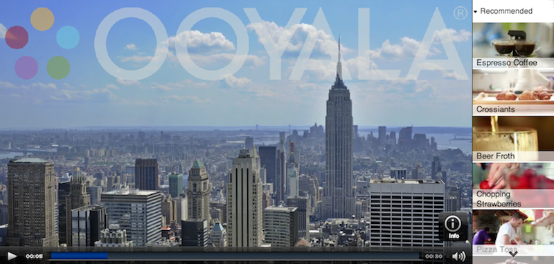
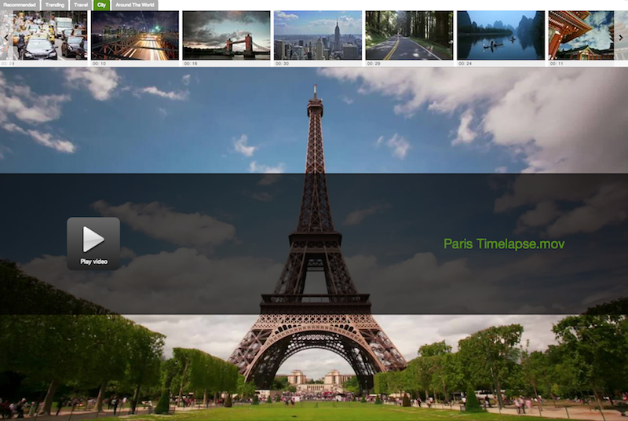
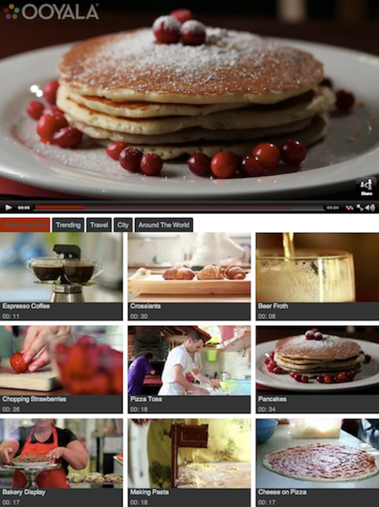
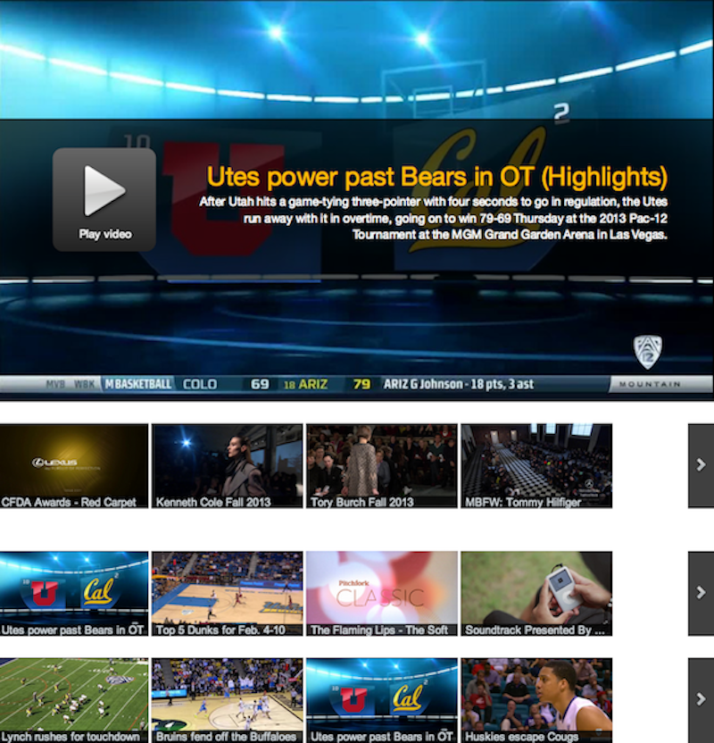
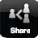
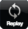

You can customize your viewer's video watching experience in many ways using Theme Builder. This page shows some of the customizations you can make to your players, pods, and screens.
The examples on this page show some of the different ways you can customize your viewer's video-watching experience with Theme Builder.
The following Theme Builder embed features a vertical pod on the right side of the player:
The following Theme Builder embed features a horizontal pod above the player:
The following Theme Builder embed features a horizontal pod below the player:
The following Theme Builder embed features multiple horizontal pods below the player:

Aside from the screen the viewer sees while watching the video there are five other screens you can customize for the player using Theme Builder:
You can configure the look and feel of the player start screen. You can select whether the video description and title will appear on the screen shown before the video starts to play.
You can configure the look and feel of the player when the viewer pauses the video or when the viewer hovers the mouse over the video. You can select whether the share tool and info tool will appear above the scrubber bar. The share tool links to the share screen and the info tool links to the info screen. The share and info screens are described below.
You can configure the look and feel of the player share screen. Viewers see the share screen when they click on the share tool.
You can select whether a form to email the video to a friend, a button to copy the URL of the video, a link to share the video on Facebook, and a link to share the video on Twitter will appear on the share screen.
You can configure the look and feel of the info screen. Viewers see the info screen when they click on the info tool.
You can select whether the video title, video description, provider name, and URL of the video will appear on the info screen.
You can configure the look and feel of the player end screen. You can select whether the replay tool, share tool, embed tool, info tool, and more tool will appear on the screen shown at the end of the video. The replay tool makes the current video start playing again from the beginning.
The embed tool displays an embeddable URL for the video that you can copy and use to display the video on your website, blog, etc. The more tool displays more videos you can watch in the same embed.